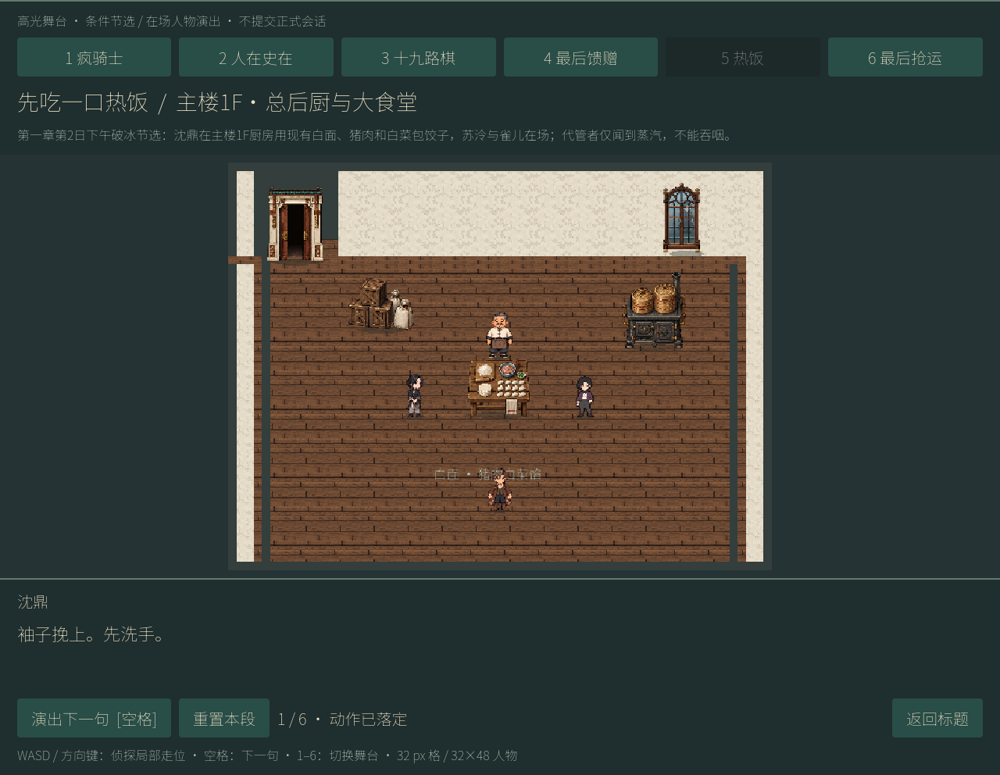
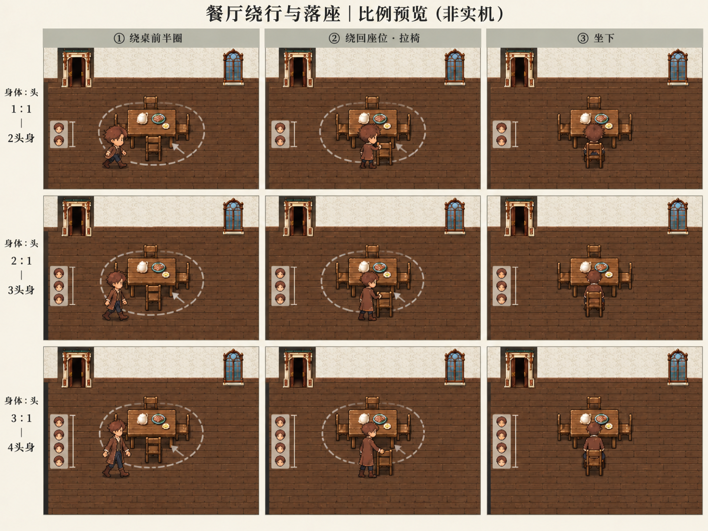
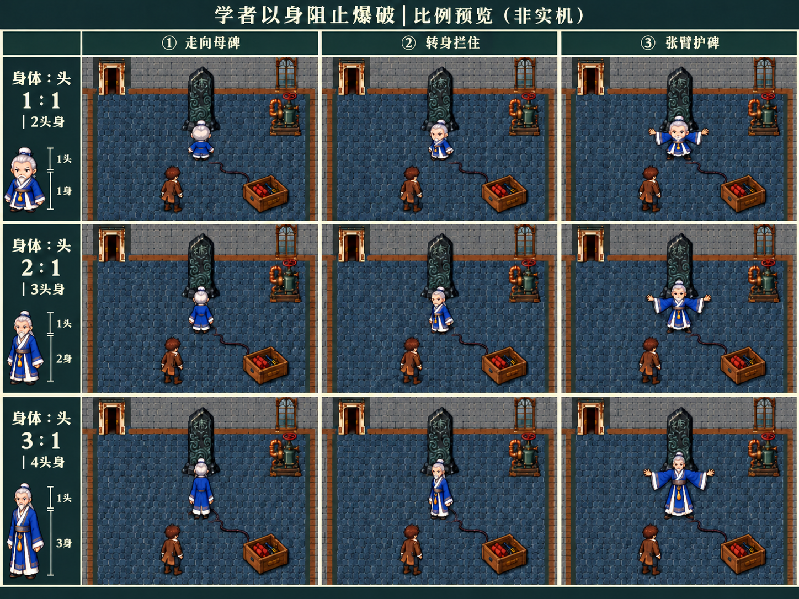

内置 image_gen 生成。每图三行依次为身体∶头 1∶1、2∶1、3∶1，即总2、3、4头身；每列为连续动作关键帧。用于选择美术方向，非本轮真实游戏渲染或动画验收。
沿用现有高光舞台的俯视斜投影与人物身份：餐厅取景包含门窗、整桌、椅子及完整绕行范围；护碑取景包含母碑、学者、侦探与未点燃引线。对比目标是固定镜头、家具与人物总高，仅改变头身划分。



二次编辑后仍存在人物总高度、比例和背景细节漂移，未形成像素级严格受控比较。图中的尺标为生成绘制，不能当测量证据。静态关键帧与路线不证明碰撞、绕行、座椅接触或动画已经实现。没有运行新会话、构建或Core AI测试，也未更改运行资源。
Astra建议优先候选为三头身（身体∶头2∶1），兼顾头部辨识与动作表达；本轮交付图供用户判断，不据此自动采用。